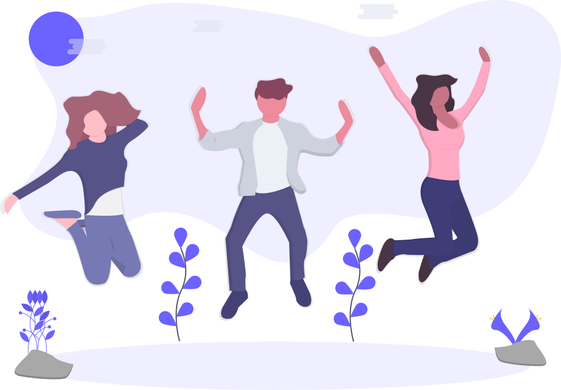

Entorno social y su relación con un buen estilo de vida
1Qué es
El entorno social, también denominado contexto social o ambiente social, es el lugar donde los individuos se desarrollan en determinadas condiciones de vida, Trabajo, economía, nivel de ingresos, nivel educativo y está relacionado con los grupos a los que pertenece

2Su relación con el estilo de vida
El entorno saludable es el espacio físico, social y cultural donde se habita cotidianamente (vivienda, escuela, lugar de trabajo, vecindario, vereda, municipio, ciudad) y donde se establecen relaciones sociales que determinan una manera de vivir y de ser, el concepto de Entornos Saludables incorpora tanto los aspectos de saneamiento básico, como los relacionados con espacios físicos limpios y adecuados, así como las redes de apoyo para lograr ámbitos psicosociales sanos y seguros, libres de violencia (abuso físico, verbal y emocional). De la misma manera las actividades de información y de educación para la salud que constituyen un complemento de estas otras formas de intervención.
Consejos para mantener un buen entorno social
1Trata de ser siempre de ayuda a tus amigos y amigas
Al tiempo que aceptas con agradecimiento la ayuda que te prestan. Si estás ahí para ellos, e otras ocasiones serás tú el ayudado.

2Participa regularmente en actividades sociales y culturales
Mantener un círculo social de amistades requiere trabajo y dedicación, toma parte en todas las actividades sociales que te sea posible, de forma amplia y variada.
3Aprende a valorar a las personas
Sé positivo y aprecia el lado bueno de la gente. Aprende a disfrutar de otras personas.
4Sé considerado con las personas
Respétalas, no las juzgues ni las valores si no te lo piden, trátalas con amabilidad y simpatía, tal como te gusta que te traten a ti.

5Observa y guarda las normas de conducta y comportamiento social
Compórtate tal como se espera que hagas y tal como esperas que los demás lo hagan contigo.

7Planifica tus acciones de desarrollo de círculos sociales
Usa tu agenda para proteger dichas acciones tales como quedar con amigos, asistir a espectáculos, cenas, actividades deportivas, etc. Sin proteger estas cosas con la agenda, es fácil que se queden fuera.

8Recuerda los nombres de las personas
Es muy importante no olvidar los nombres, ya que el nombre es la palabra que más nos gusta oir a las personas, demuestra respeto y consideración.
9Ten hábitos personales aceptables
Mantén una apariencia limpia, aseada y adecuada según tu contexto.
10Disfruta de la visita de amigos y amigas
Recibiéndoles en tu casa o visitando tú la de ellos. No te encierres como un ermitaño. Comparte tu hogar con tus amistades.
Entorno Saludable
Entorno Saludable hace referencia a un ambiente en el cual se generan inclinaciones, de origen interno o externo, propiciadoras de una adecuación para la vida plena, valor único e inalienable y derecho primordial de todo individuo.
